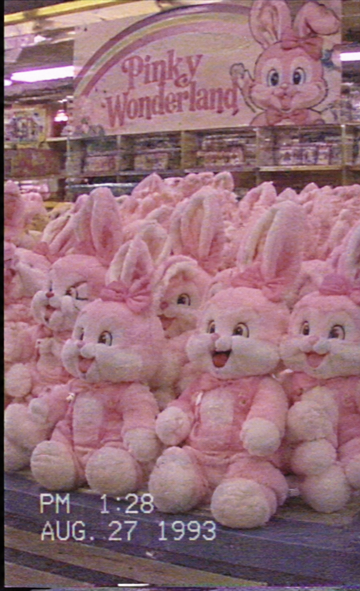
LITTLE STAR STORIES
加入 Pinky Wonderland 的會員計畫，成為夢想世界的一份子。
永恆星星會員
- 專屬會員徽章
- 每月夢境電子報
- 生日祝福卡
- 角色限定桌布
- 包含所有 Pink Star 福利
- 優先參加角色見面會
- 限定紀念品
- 生日特別祝福影片
- 包含所有 Rainbow Star 福利
- 創辦人特別感謝信
- 限定彩虹通行證
- 永恆夢境特別紀念禮物

66666

從很久很久以前就在這裡的守門人們
保護孩子們的每一個夢想
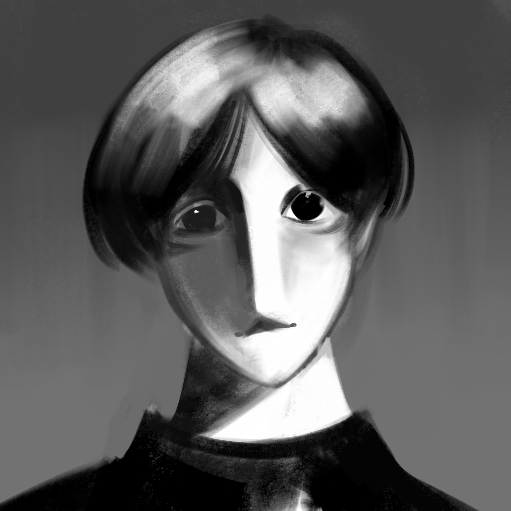
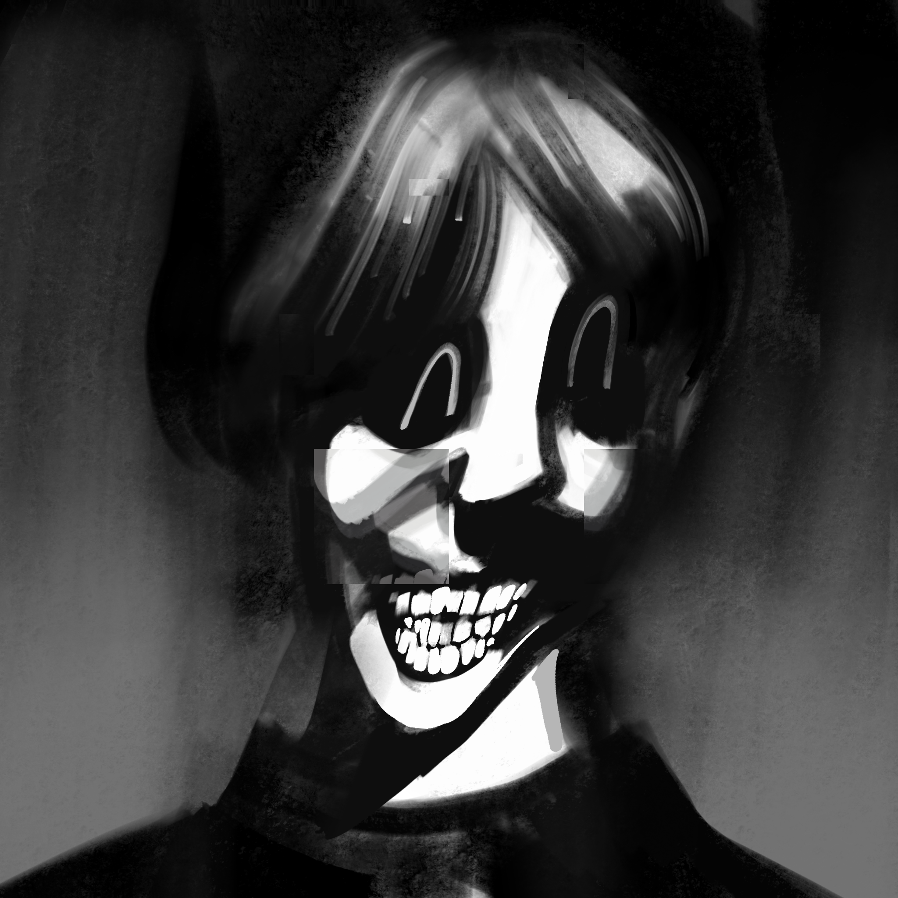
第一位創辦人，也是整個品牌最初的構想者。
在創立 Pinky Wonderland 以前，他曾經是一位兒童心理學研究者。他花費多年時間觀察孩子的夢境，並將那些夢境轉化成一個又一個充滿色彩的故事，當他看到Rocket創作的Pimky形象他深深被吸引，他邀請Rocket一起發展遊樂園的架構。他負責設計樂園的世界觀、童話故事。
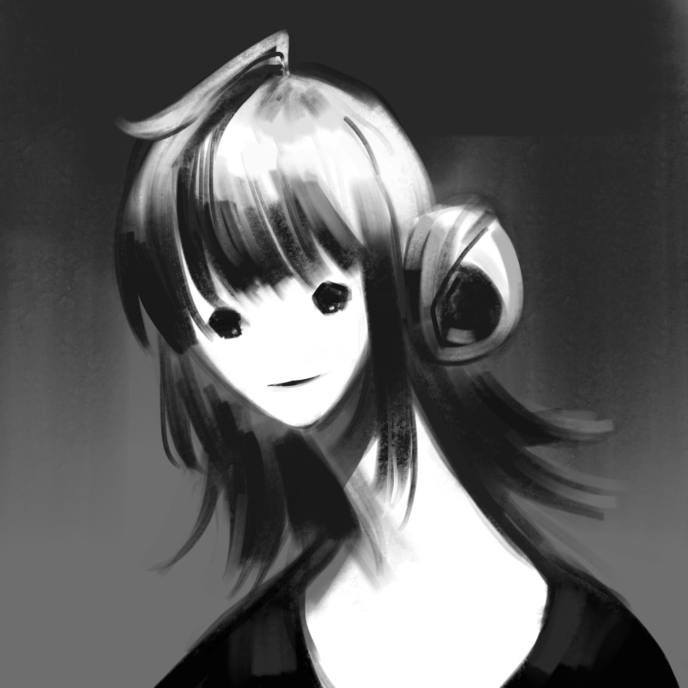
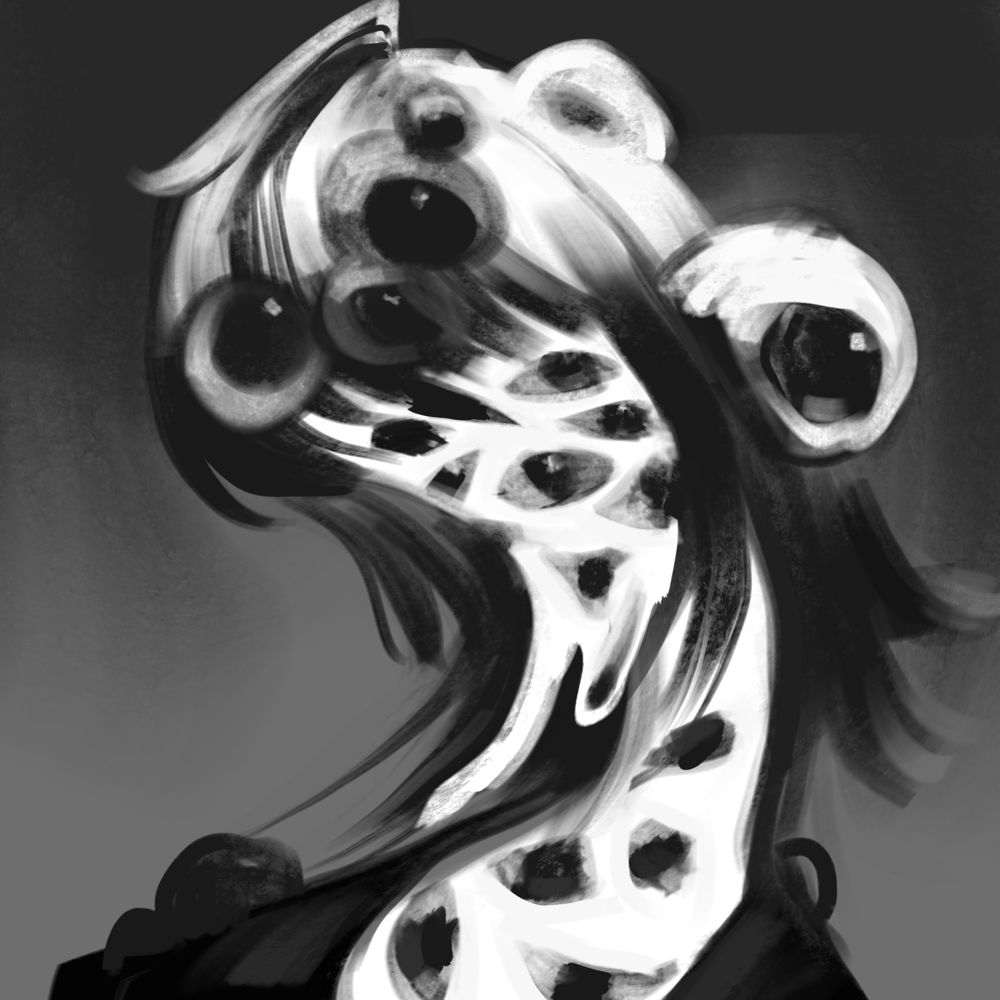
他負責樂園的建築設計、空間規劃，以及所有通往夢想世界的入口。
他最著名且最具藝術性的作品，就是位於樂園中心的巨大彩虹拱門，那座拱門是以七種特殊材質製成的，即使在沒有陽光的夜晚也能散發柔和的彩色光芒。他不愛接受採訪，他說想要認識他就該直接來樂園看看他的作品，充滿藝術性又文靜的他看似冷漠，作品卻充滿童真與對孩童的關懷心。
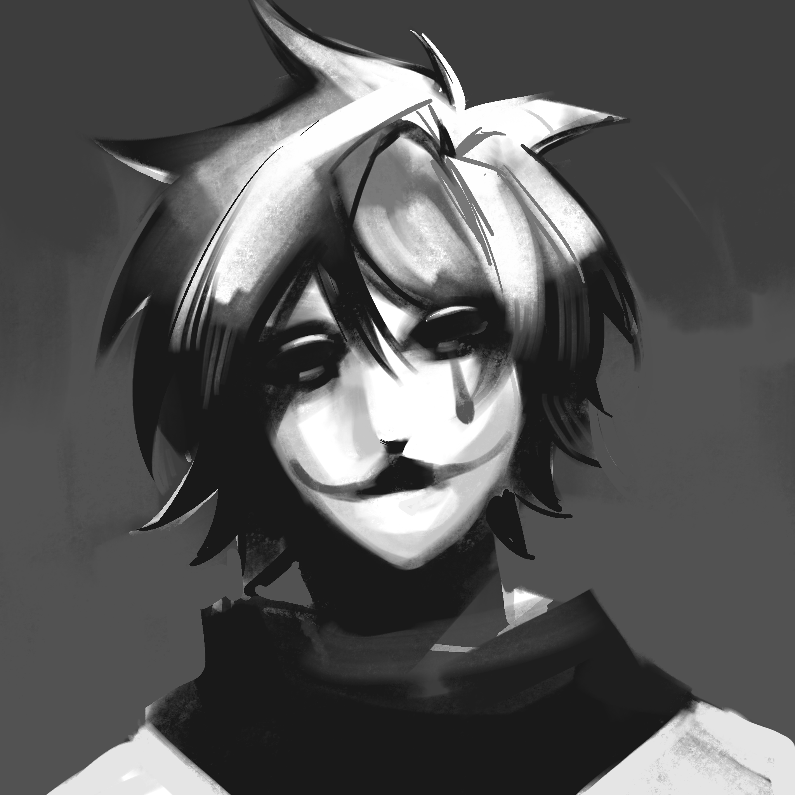
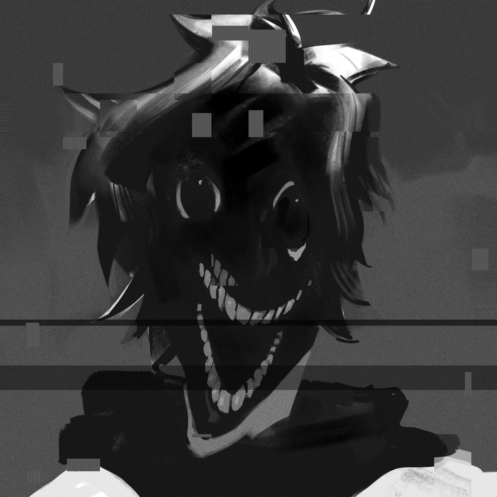
他負責音樂、舞台演出、夜間活動，以及 Pinky Wonderland 的特殊娛樂企劃。同時也是Pinky的創作者。
他曾經在美國的知名馬戲團擔任小丑，豐富的表演經驗讓他為Pinky Wonderland的演出活動給出了老練的建議。他的過往十分神祕，沒有家人，也沒人知道他從哪裡來，甚至不接受在沒有化小丑妝時被拍攝，但我們永遠記的他對Pinky的愛與付出。
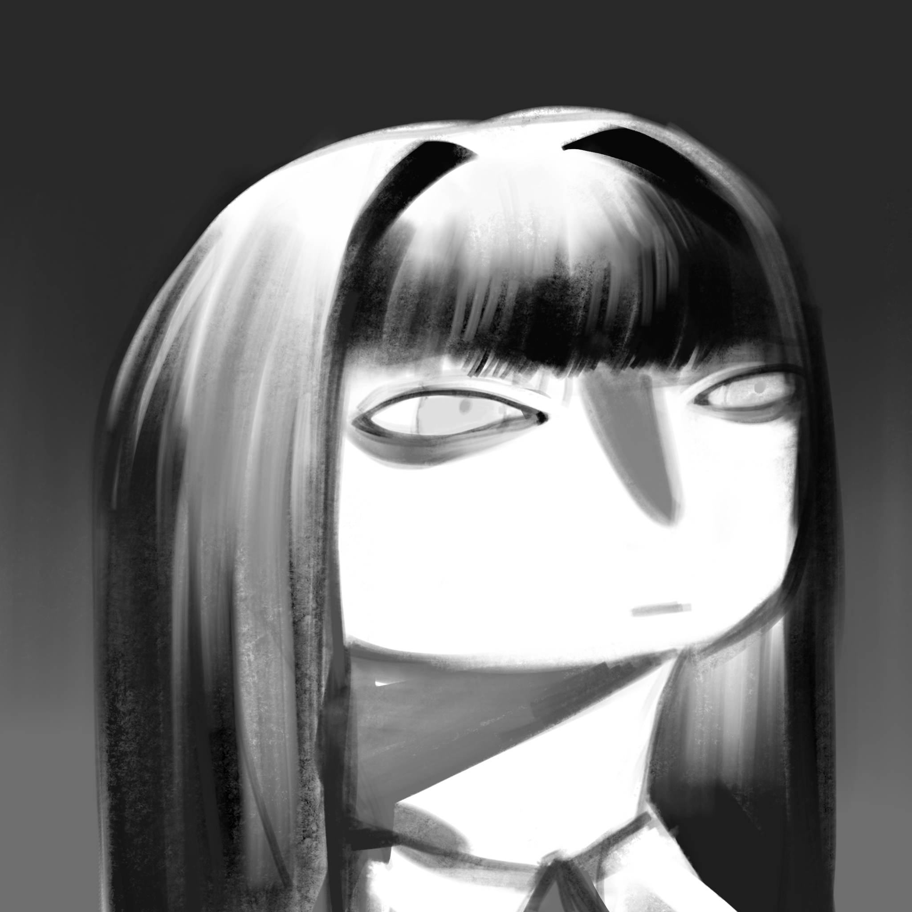
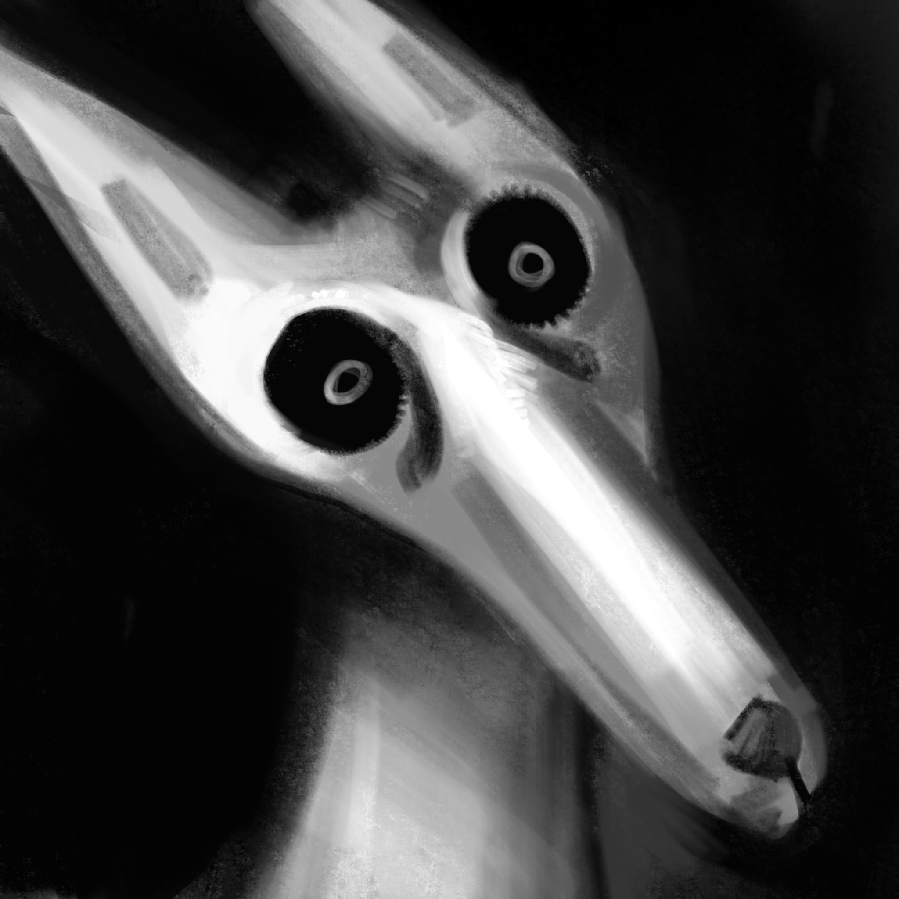
他負責角色設計、服裝製作、表演團隊
他有著溫柔的笑容，總是穿著粉色洋裝，說話時也像唱歌一樣輕柔。Mudong相信，真正的魔法不是讓人看見奇蹟，而是讓人感受到自己被愛著。親自設計了玩偶裝細緻的臉部表情。其中最重要的部分，就是 Pinky 那張永遠不會消失的微笑。

加入 Pinky Wonderland 的會員計畫，成為夢想世界的一份子。
永恆星星會員
- 專屬會員徽章
- 每月夢境電子報
- 生日祝福卡
- 角色限定桌布
- 包含所有 Pink Star 福利
- 優先參加角色見面會
- 限定紀念品
- 生日特別祝福影片
- 包含所有 Rainbow Star 福利
- 創辦人特別感謝信
- 限定彩虹通行證
- 永恆夢境特別紀念禮物
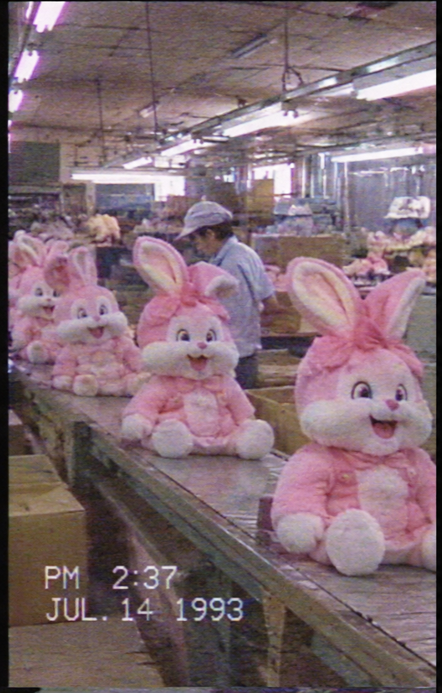
Pinky成為了我們最好的朋友。每一隻玩偶都飽含了製作人員的愛，也記錄了孩子與 Pinky 之間最珍貴的回憶。
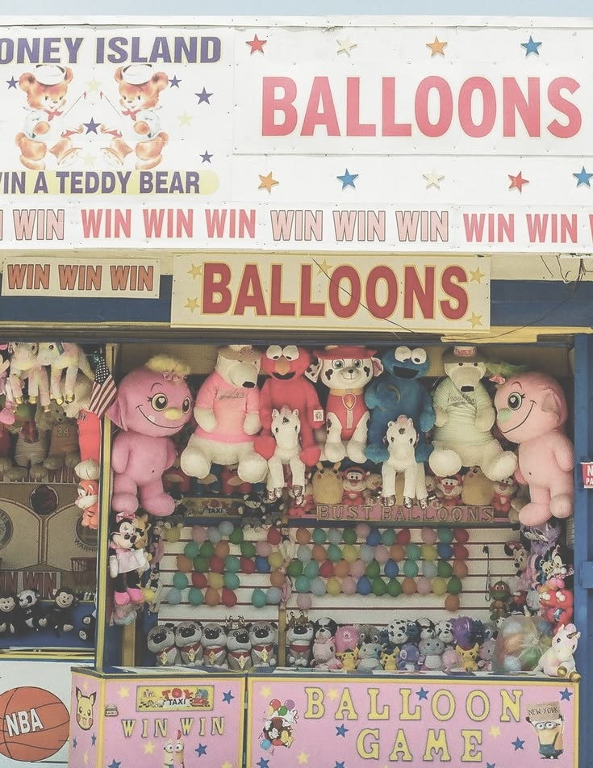
Pinky Wonderland 是一座充滿愛與奇蹟的夢想樂園，我們擁有各種令人驚喜的遊樂設施，讓每位來訪的小朋友都能找到屬於自己的幸福。我們有一條充滿卡通風格的購物街，街道兩旁有糖果店、玩具店、紀念品商店，以及永遠飄著草莓香氣的甜點屋，肯定是小朋友們的最愛。